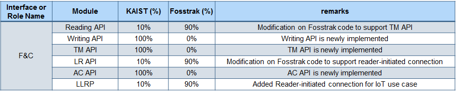

Oliot ALE is an implementation of EPCglobal Application Level Events (ALE) interface which provides APIs for filtering and grouping radio frequency identification (RFID) based data.
Oliot ALE is forked from the Fosstrak Filtering and Collection project. The objective of this fork is to develop EPCglobal-architecture-based IoT platform under the vision of Auto-ID Labs, KAIST.
In Oliot, Oliot ALE is located in the middleware position as shown above. Extending the idea of ALE middleware, we will generalize Oliot ALE middleware role to process stream-based raw data from various devices to generate refined high-level events following GS1 standard.The data from these various devices is abstracted to a concept of stream, for which we will develop stream processing feature.
In the current stage, we developed Oliot filtering and collection to implement ALE interface fully based on Fosstrak fc project. We compared ours with Fosstrak in the following table. We developed newly 3 APIs: Writing API, Tag Memory API, Access Control API, and developed reader initiated connection feature for IoT use case.

There are 4 subprojects in Oliot ALE.